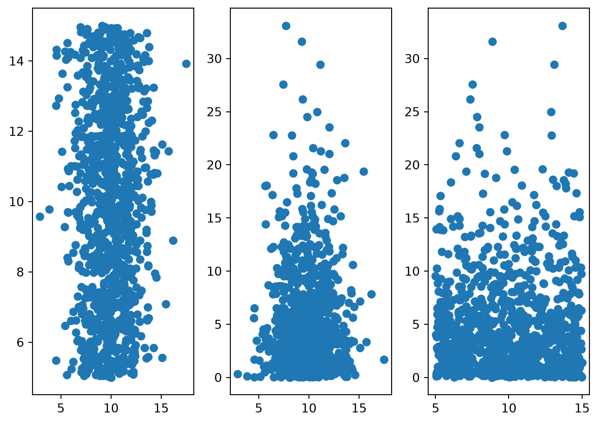

x = "Pythonista"
for c in x:
print(c)P
y
t
h
o
n
i
s
t
aEinführung in Python und PsychoPy
Clemens Brunner
1. Oktober 2026
Der Code funktioniert nicht, weil lambda ein reserviertes Schlüsselwort in Python ist und daher nicht als Name verwendet werden kann. Der korrekte Code könnte wie folgt aussehen:
Das Problem ist, dass der elif-Zweig nach dem else-Block steht. In Python muss der (optionale) else-Block immer am Ende eines if/elif/else-Blocks stehen. Die korrigierte Version sieht also wie folgt aus:
Der Code funktioniert nicht, weil nach der for-Schleife ein Doppelpunkt (:) fehlt. Der korrekte Code lautet:
Der Code funktioniert nicht, weil die eingebaute Funktion sum durch eine Ganzzahl “überschrieben” wird (nämlich mit der Summe, welche mittels Schleife berechnet wird). Danach kann die eingebaute Funktion sum nicht mehr aufgerufen werden. Es wäre hier also besser, anstelle von sum einen Namen zu verwenden, der keiner eingebauten Funktion entspricht, z.B. s:
Der Code enthält zwei Fehler: Nach if a < 10 fehlt der abschließende Doppelpunkt, und der print-Aufruf verwendet die (in Python 2 gültige, in Python 3 aber ungültige) Anweisungsform ohne Klammern. Der korrekte Code lautet:
Eine einfache Implementierung der Funktion verwendet einen langen if/elif/else-Block:
def month_name(month):
if month == 1:
return "Januar"
elif month == 2:
return "Februar"
elif month == 3:
return "März"
elif month == 4:
return "April"
elif month == 5:
return "Mai"
elif month == 6:
return "Juni"
elif month == 7:
return "Juli"
elif month == 8:
return "August"
elif month == 9:
return "September"
elif month == 10:
return "Oktober"
elif month == 11:
return "November"
elif month == 12:
return "Dezember"
while True:
month = int(input("Bitte geben Sie eine Zahl zwischen 1 und 12 ein: "))
if 1 <= month <= 12:
break
print("Ungültige Eingabe, bitte versuchen Sie es erneut.")
print(month_name(month))Etwas kürzer könnte man die Funktion mit Hilfe einer Liste schreiben (der restliche Code bleibt gleich):
Auch mit einem Dictionary lässt sich die Funktion umsetzen:
Eine sehr kompakte Lösung ergibt sich, wenn man das Modul calendar aus der Standardbibliothek verwendet. Dies setzt aber natürlich voraus, dass man das Modul kennt (in diesem Kurs haben wir es nicht behandelt, daher ist diese Lösung nur der Vollständigkeit halber aufgeführt):
Wichtig ist, dass die Teilbarkeit durch 3 und 5 (also 15) zuerst überprüft wird!
Beachten Sie, dass der else-Block nicht notwendig ist und weggelassen werden kann:
Eine noch kompaktere Version verwendet die Tatsache, dass in Python Werte vom Typ bool als Ganzzahlen interpretiert werden können (True entspricht 1, False entspricht 0):
Im Rahmen dieses Kurses ist diese Lösung aber zu fortgeschritten, da wir diese Eigenschaft von bool-Werten nicht behandelt haben.
Der Code funktioniert nicht, weil lambda ein reserviertes Schlüsselwort in Python ist und daher nicht als Funktionsname verwendet werden kann. Um die Funktion korrekt zu implementieren, sollte ein anderer Name verwendet werden, zum Beispiel lambda_:
True
FalseUm die Effizienz der Funktion zu verbessern, können Sie die Schleife so ändern, dass sie nur bis zur Quadratwurzel von \(n\) (inklusive) geht. Wenn \(n\) durch eine Zahl größer als seine Quadratwurzel teilbar ist, muss es auch durch eine kleinere Zahl teilbar sein.
Im Funktionskopf fehlen die Klammern nach f für die (leere) Parameterliste. Der korrekte Code lautet:
x.x wurde doppelt übergeben, einmal als positionales Argument (4) und einmal als Schlüsselwortargument (x=2).x.Oder noch kürzer (eleganter):
Jede Listen-Methode ändert die Liste in-place und gibt daher nichts (None) zurück – daher wird im Beispiel x auf None gesetzt. Die korrekte Variante ist:
Der Code funktioniert nicht, weil die eingebaute Funktion sum nur ein einziges Argument (wie z.B. eine Liste oder ein Tupel) akzeptiert. Der Versuch, mehrere separate Argumente zu übergeben, führt zu einem Fehler.
Ein korrekter Funktionsaufruf wäre daher:
Ein Tuple mit einem einzigen Element erstellt man mit einem Komma am Ende:
def count_words(text, sep=" "):
return len(text.split(sep))
text = (
"Python is an easy to learn, powerful programming language. It has efficient "
"high-level data structures and a simple but effective approach to object-oriented "
"programming. Python's elegant syntax and dynamic typing, together with its "
"interpreted nature, make it an ideal language for scripting and rapid application "
"development in many areas."
)
count_words(text)49text = """From fairest creatures we desire increase,
That thereby beauty's rose might never die,
But as the riper should by time decease,
His tender heir might bear his memory:"""
lines = text.splitlines()
print(f"Anzahl der Zeilen: {len(lines)}")
for i, line in enumerate(lines, start=1):
if "thereby" in line:
print(f'"thereby" gefunden in Zeile {i}.')Anzahl der Zeilen: 4
"thereby" gefunden in Zeile 2.Da der String selbst doppelte Anführungszeichen enthält, können wir diesen entweder mit einfachen Anführungszeichen umschließen:
Alternativ können wir die doppelten Anführungszeichen mit einem Backslash maskieren (Escape-Zeichen):
Lösung mit einer while-Schleife:
5 - 4 - 3 - 2 - 1 - 0 - Liftoff!
7 - 5 - 3 - 1 - Liftoff!Lösung mit einer for-Schleife:
1. 34
2. 8
3. 13
4. 7
5. SUPERCALIFRAGILISTICEXPIALIDOCIOUS
6. supercal!frag!l!st!cexp!al!doc!ousDer Fehler liegt darin, dass die Funktion np.zeros ein Tupel (oder eine Liste) mit den Dimensionen des Arrays erwartet, nicht zwei separate Argumente. Der korrekte Code lautet daher:
